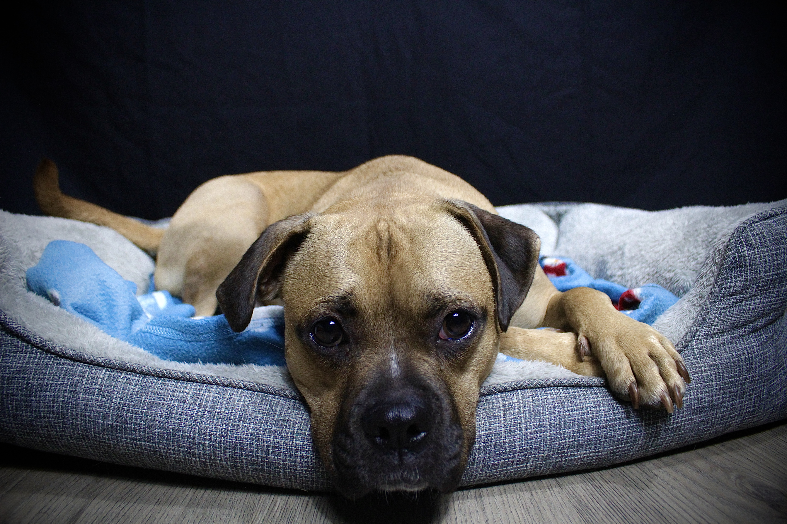
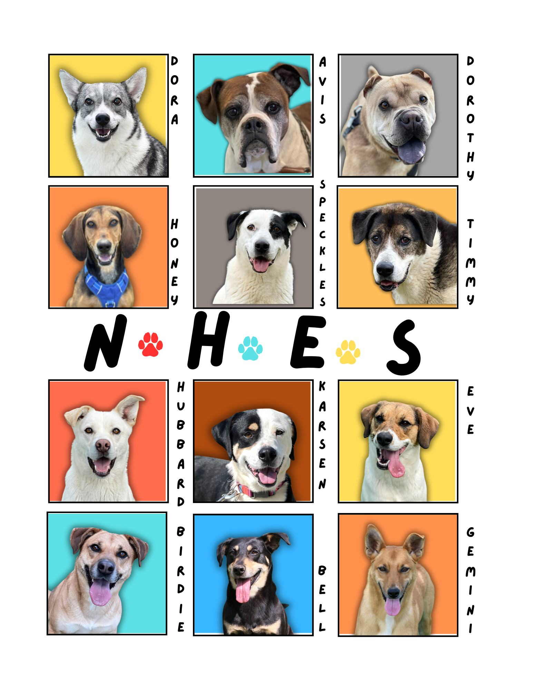
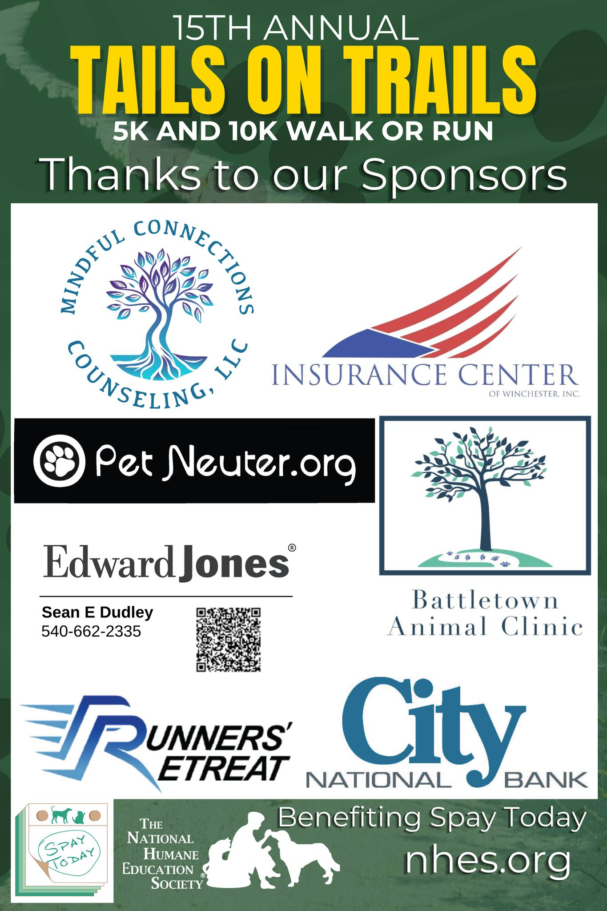

Animal Adoption
View this TikTok from @nhes_wv
I combine photography, video, social media, graphic design, web content, event marketing, and live production to help organizations connect with their audiences. My nonprofit work has contributed to 160,837 Facebook views, $13,689 in campaign revenue, and stronger community participation across digital and in-person campaigns.

Photography • Videography • Design • Marketing
About Me
I earned a B.S. in Communications & New Media with a concentration in Digital Filmmaking from Shepherd University. Today, my work spans nonprofit development and communications, live broadcast audio, photography, video, graphic design, and web content.
At The National Humane Education Society, I support fundraising campaigns, community partnerships, event promotion, donor communications, CRM reporting, social media, and website updates. Whether I’m capturing a cinematic portrait, editing short-form video, designing a campaign graphic, updating a website, or monitoring a live broadcast, I bring curiosity, care, and a results-focused mindset to the work.
Outside of work, you’ll usually find me at the gym, visiting a local coffee shop, exploring the region with my Puggle, Doug, or developing a film and storytelling project. I’m open to opportunities in digital media, communications, social strategy, content creation, design, and web content.
Let's connect and tell great stories together.
Engagements, portraits, theatrical performances, events, pet photography, and creative visual storytelling.
Video production, editing, digital storytelling, promotional content, and multimedia projects.
Short-form content, post planning, campaign strategy, analytics, audience engagement, and platform-specific messaging.
Canva and Photoshop graphics, campaign materials, WordPress/Divi and Squarespace content, and front-end web development.
Featured Work
.png)

.JPG)

.JPG)

.png)
.jpg)
.JPG)
Video & Social Content
A collection of video work ranging from narrative short-film projects to short-form social media content created for community engagement, animal shelter storytelling, adoption awareness, and event promotion.
Featured Short Film
A senior capstone project completed at Shepherd University that highlights my experience with storytelling, shot composition, editing, pacing, and creative direction.
Animal Adoption
View this TikTok from @nhes_wv
Animal Feature
View Henry's TikTok from @nhes_wv
Animal Feature
View Sheba's TikTok from @nhes_wv
Creative Design
A curated selection of social graphics, event materials, campaign assets, digital designs, and promotional visuals.






Marketing & Strategy
Six focused examples of social media growth, fundraising, event promotion, donor engagement, and digital campaign strategy.
Fundraising Campaign
01Organized donor items, categories, campaign content, postcards, and digital promotion for the Whiskers & Wags Online Auction.
Donation Campaign
02Helped support a holiday giving campaign designed to encourage community donations and provide needed items for shelter animals.
Social Media
03Launched the organization’s TikTok account from the ground up and created short-form content focused on animal stories, adoption awareness, event promotion, and nonprofit storytelling.
Social Media Reporting
04Tracked and evaluated the cumulative performance of Facebook content I supported beginning June 8, 2025, using month-to-month reporting to document results accurately.
Event Promotion
05Supported year-over-year growth for recurring nonprofit events through social media promotion, e-blasts, website updates, printed materials, registration workflows, sponsor outreach, and community-focused messaging.
Fundraising & CRM
06Created and managed Givebutter fundraising, registration, sponsorship, and ticketing workflows; supported donor communication and built community fundraising partnerships with local businesses.
Contact
I’m currently open to opportunities in digital communications, social media, content creation, marketing, photography, video, graphic design, and web content.
Whether you're interested in working together, viewing more of my work, or discussing a creative opportunity, feel free to reach out.
Martinsburg, WV / Remote Available
Photography • Video • Social Media • Design • Marketing • Web